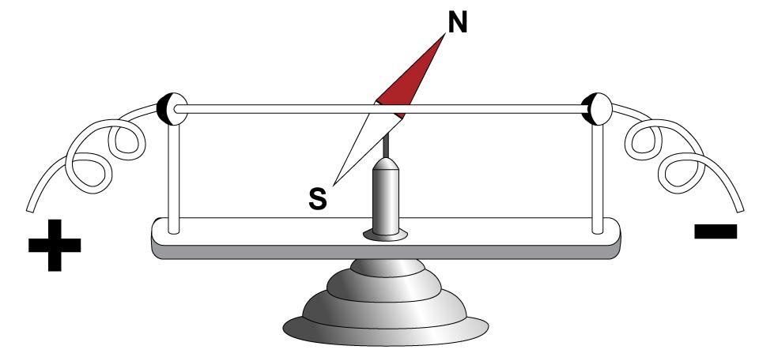
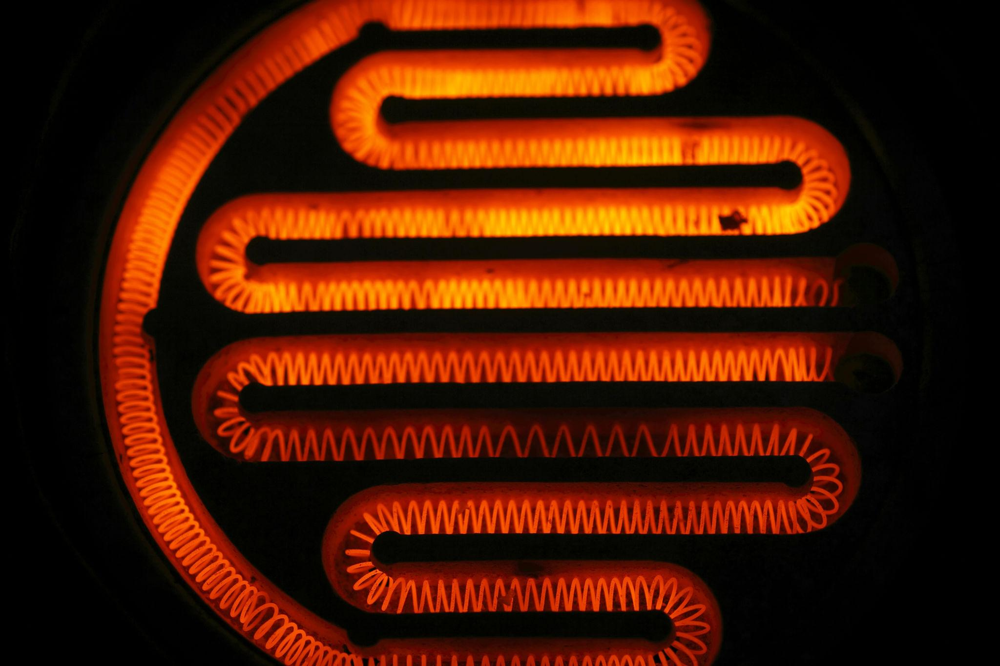
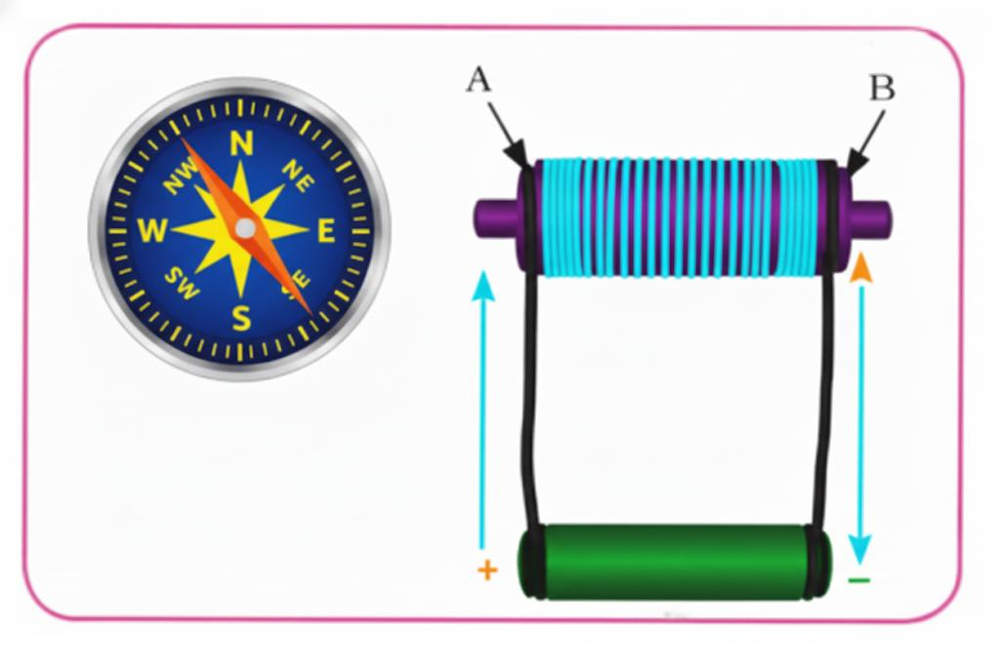
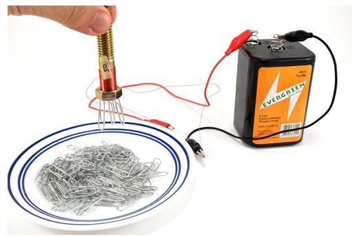
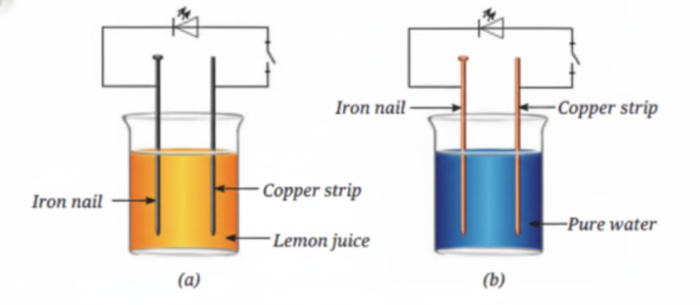
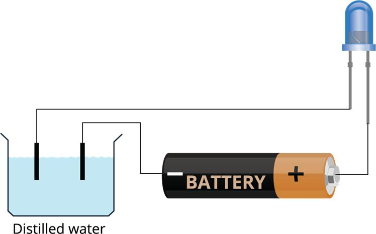
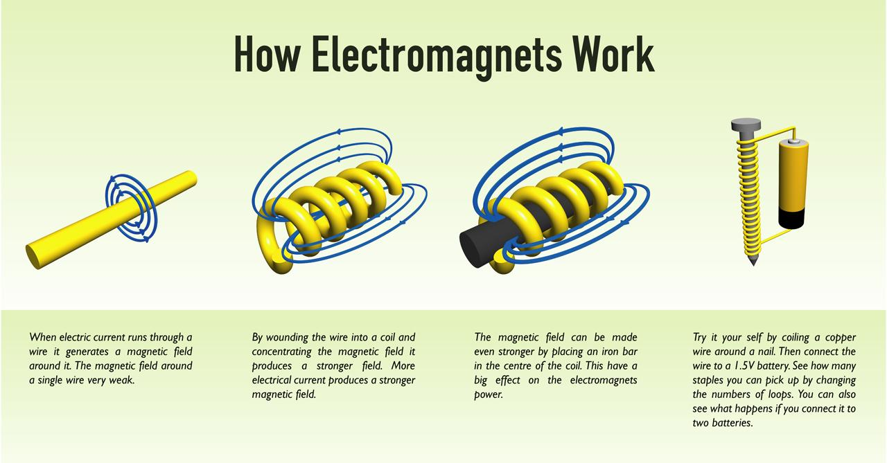
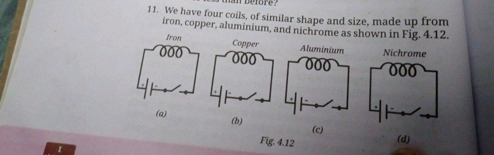

Class 8📘 Chapter 4: Electricity and Its Effects – Questions and Answers
1. Fill in the Blanks
Question 1. Fill in the blanks:
(i) The solution used in a Voltaic cell is called ______.
Answer: Electrolyte.
(ii) A current-carrying coil behaves like a ______.
Answer: Bar magnet.
2. Choose the Correct Option: True or False
Question 2. Choose the correct option:
(i) Dry cells are less portable compared to Voltaic cells. (True/False)
Answer: False.
Dry cells are more portable and convenient to use than ordinary wet Voltaic cells.
(ii) A coil becomes an electromagnet only when electric current flows through it. (True/False)
Answer: True.
A current-carrying coil produces a magnetic field and behaves like an electromagnet.
(iii) An electromagnet, using a single cell, attracts more iron paper clips than the same electromagnet with a battery of 2 cells. (True/False)
Answer: False.
A battery of two cells generally produces a stronger magnetic field than a single cell. Therefore, it can attract more iron paper clips.
3. Heating and Magnetic Effects of Electric Current
Question 3. An electric current flows through a nichrome wire for a short time.
(i) The wire becomes warm.
(ii) A magnetic compass placed below the wire is deflected.
Choose the correct option:
- Only (i) is correct.
- Only (ii) is correct.
- Both (i) and (ii) are correct.
- Both (i) and (ii) are not correct.
Answer: Correct option (c) – Both (i) and (ii) are correct.
Explanation:
- When electric current flows through nichrome wire, it produces heat. This is called the heating effect of electric current.
- Electric current also produces a magnetic field around the wire. This magnetic field deflects the compass needle.

Conclusion: Electric current produces both heating and magnetic effects.
4. Match the Following
Question 4. Match the items in Column A with those in Column B.
| Column A | Column B |
|---|---|
| (i) Voltaic cell | (a) Best suited for electric heater |
| (ii) Electric iron | (b) Works on magnetic effect of electric current |
| (iii) Nichrome wire | (c) Works on heating effect of electric current |
| (iv) Electromagnet | (d) Generates electricity by chemical reactions |
Answer:
- (i) – (d) Voltaic cell – Generates electricity by chemical reactions.
- (ii) – (c) Electric iron – Works on heating effect of electric current.
- (iii) – (a) Nichrome wire – Best suited for electric heater.
- (iv) – (b) Electromagnet – Works on magnetic effect of electric current.
5. Uses of Nichrome Wire
Question 5. Nichrome wire is commonly used in electrical heating devices because it:
- Is a good conductor of electricity.
- Generates more heat for a given current.
- Is cheaper than copper.
- Is an insulator of electricity.
Answer: Correct option (ii) – Generates more heat for a given current.
Explanation: Nichrome has high electrical resistance. Therefore, it produces more heat when electric current passes through it.
It also has a high melting point, making it suitable for heating devices such as electric heaters and irons.

Conclusion: Nichrome is commonly used in heating devices because of its high resistance and high melting point.
6. Advantages of Electric Heating Devices
Question 6. Electric heating devices (like an electric heater or a stove) are often considered more convenient than traditional heating methods (like burning firewood or charcoal). Give reasons to support this statement considering societal impact.
Answer: Electric heating devices are more convenient than traditional heating methods for the following reasons:
- They are easy to use and save time.
- They produce heat quickly.
- They do not produce smoke inside the house.
- They help reduce indoor air pollution.
- They reduce the need for firewood and help protect forests.
- They are generally cleaner and easier to control.
Conclusion: Electric heating devices make our lives more comfortable and help reduce air pollution and deforestation. However, electricity should also be used carefully.
7. Magnetic Effect of Electric Current in a Coil
Question 7. Look at Fig. 4.4a. If the compass placed near the coil deflects:
(i) Draw an arrow on the diagram to show the path of the electric current.
Answer: Draw the arrow from the positive (+) terminal of the cell through the connecting wire and coil towards the negative (−) terminal.
The direction of conventional current is from the positive terminal to the negative terminal through the external circuit.

(ii) Explain why the compass needle moves when current flows.
Answer: When electric current flows through the coil, it produces a magnetic field around it. This magnetic field affects the compass needle and makes it move.
(iii) Predict what would happen to the deflection if you reverse the battery terminals.
Answer: If we reverse the battery terminals, the direction of electric current also reverses. Therefore, the compass needle will deflect in the opposite direction.

8. Working of a Lifting Electromagnet
Question 8. Suppose Sumana forgets to move the switch of her lifting electromagnet model to OFF position (in introduction story). After some time, the iron nail no longer picks up the iron paper clips, but the wire wrapped around the iron nail is still warm. Why did the lifting electromagnet stop lifting the clips? Give possible reasons.
Answer: The lifting electromagnet may have stopped working because:
- The battery may have become weak or exhausted.
- The electrical connections may have become loose or broken.
- The current flowing through the coil may have stopped or become too weak.
- Continuous heating may have increased the resistance of the wire and reduced the current.
The wire may still be warm because it was heated earlier by electric current.
Conclusion: An electromagnet needs electric current to produce magnetism. When the current stops, it loses its magnetic effect and cannot lift iron paper clips.

9. Conductivity of Lemon Juice and Pure Water
Question 9. In Fig. 4.12, in which case will the LED glow when the switch is closed?
Answer: Case (a) – Lemon juice.
Explanation:
Case (a): Lemon Juice
Lemon juice contains acids and ions that allow electric current to pass through it. Therefore, the LED will glow.
Case (b): Pure Water
Pure water is a very poor conductor of electricity. Therefore, the LED will not glow or may glow too faintly to be visible.

Conclusion: Lemon juice conducts electricity better than pure water because it contains ions.
10. Magnetic Effect of a Coil Without an Iron Nail
Question 10. Neha keeps the coil exactly the same as in Activity 4.4 but slides the iron nail out, leaving only the coiled wire. Will the coil still deflect the compass? If yes, will the deflection be more or less than before?
Answer: Yes, the coil will still deflect the compass because electric current produces a magnetic field around the coil.
However, the deflection will be less than before because the iron nail makes the magnetic field stronger.
Without the iron nail, the coil produces a weaker magnetic field.

Conclusion: An iron core increases the strength of an electromagnet.
11. Magnetic Effect of Different Materials
Question 11. We have four coils of similar shape and size, made up of iron, copper, aluminium and nichrome as shown in Fig. 4.13. When current is passed through the coils, compass needles placed near the coils will show deflection.
Choose the correct option:
- Only in circuit (a).
- Only in circuits (a) and (b).
- Only in circuits (a), (b) and (c).
- In all four circuits.
Answer: Correct option (iv) – In all four circuits.
Explanation:
Iron, copper, aluminium and nichrome can all conduct electricity.
When electric current passes through any of these coils, a magnetic field is produced around the coil.
Therefore, a compass needle placed near each coil will show deflection.

Conclusion: Every current-carrying coil produces a magnetic field, regardless of which of these conducting materials is used.
12. Important Terms to Remember
| Term | Simple Meaning |
|---|---|
| Voltaic Cell | A device that produces electricity through chemical reactions. |
| Electrolyte | A solution that conducts electricity through ions. |
| Electric Current | The flow of electric charge. |
| Electromagnet | A temporary magnet produced by electric current. |
| Nichrome | An alloy used in heating elements. |
| Magnetic Field | The region around a magnet or current-carrying conductor where magnetic force acts. |
| Heating Effect | Production of heat when electric current flows through a conductor. |
| Compass | An instrument used to find directions using Earth's magnetic field. |
| Resistance | The opposition offered to the flow of electric current. |
13. Quick Revision – Correct Answers
| Question | Correct Answer |
|---|---|
| Q1 (i) | Electrolyte |
| Q1 (ii) | Bar magnet |
| Q2 (i) | False |
| Q2 (ii) | True |
| Q2 (iii) | False |
| Q3 | Option (c) |
| Q4 | (i)-(d), (ii)-(c), (iii)-(a), (iv)-(b) |
| Q5 | Option (ii) |
| Q9 | Case (a) – Lemon juice |
| Q11 | Option (iv) |
14. Important Points to Remember
- A Voltaic cell produces electricity through chemical reactions.
- The solution used in a Voltaic cell is called an electrolyte.
- A current-carrying coil behaves like a bar magnet.
- Electric current produces both heating and magnetic effects.
- Nichrome is commonly used in electrical heating devices.
- An electromagnet works only when electric current flows through its coil.
- An iron core increases the strength of an electromagnet.
- Reversing the battery terminals reverses the direction of the magnetic field.
- Lemon juice conducts electricity better than pure water.
- Copper, aluminium, iron and nichrome can all conduct electric current.
15. Chapter Summary
Electricity is an important part of our daily lives. A Voltaic cell produces electricity through chemical reactions. When electric current passes through a wire, it produces heat and a magnetic field.
Nichrome wire is used in heating devices because of its high electrical resistance and high melting point. A current-carrying coil behaves like a magnet. When an iron nail is placed inside the coil, it becomes an electromagnet.
Electric current can also be detected using a magnetic compass. Some liquids, such as lemon juice, conduct electricity because they contain ions, while pure water is a very poor conductor.
Message of the Chapter
Electricity and magnetism are closely related. Understanding their effects helps us use electrical devices safely and develop useful technologies.
MCQ Quiz
अध्याय के वस्तुनिष्ठ प्रश्नों का अभ्यास करें।
MCQ Quiz शुरू करेंPDF Notes
इस अध्याय के नोट्स PDF में पढ़ें या डाउनलोड करें।
📄 View PDF ⬇️ Download PDF